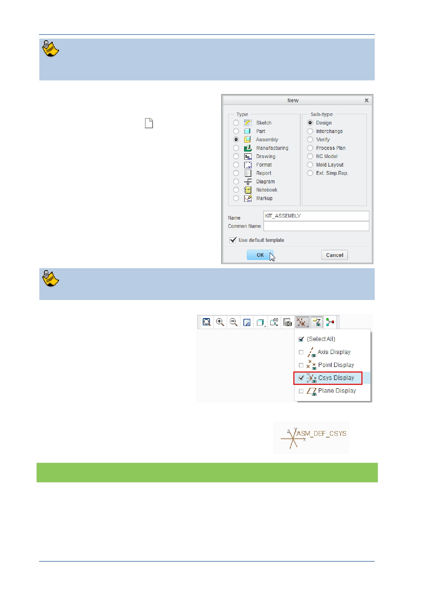

PTC Academic Program
The assembly file you create will be saved to and opened from this “working
directory”, the same folder where your Corner Cube and Strut were saved.
3. Creating the new assembly model:
From the Quick Access toolbar or
Home tab, click New
.
In the New dialog box, click to select
Assembly as the new model type.
Type KIT_ASSEMBLY in the Name
field and click OK .
You cannot use spaces in filenames so use underscores or hyphens instead.
4. Changing the display of datum
features:
In the Graphics toolbar, disable
the display of all datum features
except coordinate systems.
Coordinate systems will be used to
assemble the first component.
The default coordinate system should be displayed
at the center of the graphics area. Notice the X, Y
and Z axes of the coordinate system.
What have you learned?
Set working directory – an existing folder.
Create a new assembly.
Datum display – visibility.
© 2012 PTC
Creo Parametric 2.0 Primer
Page 65